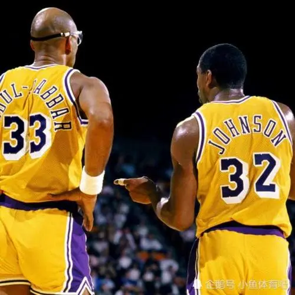
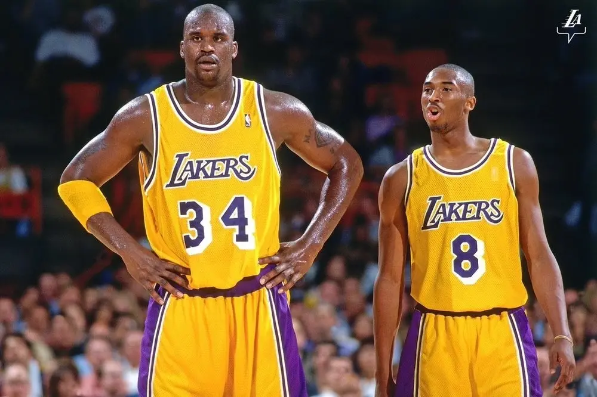
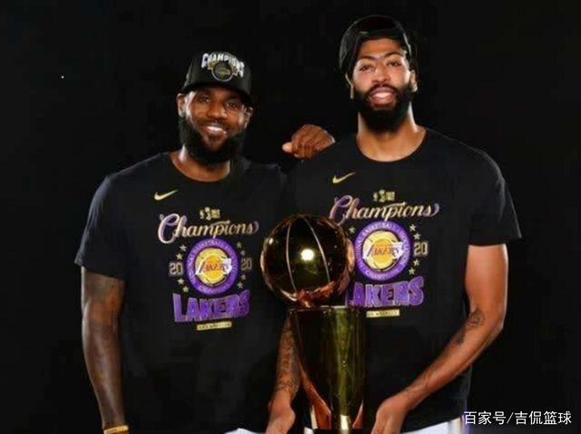

979-80赛季,湖人常规赛取得60胜22负,贾巴尔也拿到了生涯第六次常规赛MVP(有三次在雄鹿)。 该赛季总决赛,湖人对阵由“J博士”朱利叶斯·欧文率领的费城76人队。 在第六场之前,湖人已经3-2取得赛点,但贾巴尔却意外受伤。 于是,时为新秀的魔术师挺身而出,临时顶替贾巴尔打上了中锋位置,结果居然全场砍下了42分15篮板7助攻的全面数据 ,帮助湖人夺得了总冠军并成为了NBA历史上最年轻的FMVP(20岁)。
99-00赛季,曾带领芝加哥公牛队完成了两次三连冠的“禅师”菲尔·杰克逊(Phil Jackson)成为了湖人新任主教练。 在禅师的带领下，奥尼尔在该赛季打出了整个生涯最佳的表现,场均得到29.7分13.6篮板3盖帽,并和科比一起拿下了全联盟第一的67胜15负的战绩;而他本人也凭此当选为了常规赛MVP。 该赛季季后赛,湖人在西部决赛经过7场血战后惊险淘汰了开拓者,闯进总决赛;其中在第七场的第四节,湖人甚至一度还落后15分,但奥尼尔和科比随后便接管了比赛，率领湖人完成了逆转。 总决赛，面对该赛季总决赛,湖人对阵由雷吉. 米勒率领的费城76人队。 率领的印第安纳步行者队,前两场比赛湖人全部取胜; 第三场,科比由于脚伤而未能参赛,湖人也未能取胜。第四场比赛,带伤请缨出战,两队战至加时赛,奥尼尔在加时赛开始后一分钟6犯离场,科比则独自扛起了球队;加时赛,湖人全队得到16分,科比则独取8分并带队取得了胜利。 接着,湖人虽然又输掉了一个客场,但很快便顺利地拿下了第六场比赛。 最终,湖人以4-2击败了步行者,夺得了队史自1988年以来的首个总冠军。 虽然科比在总决赛中屡次救主,不过FMVP还是授予了奥尼尔。 奥尼尔在当年总决赛场均得到38分16.7篮板2.7盖帽,六场大战有3场得分超过40分,第二场甚至打出了40分24篮板4助攻3盖帽的恐怖数据。
总决赛中,湖人在前四场比赛中便以大比分3-1取得了冠军点。10月10日,湖人在总决赛第五场以108-111憾负热火,错失终结比赛的最佳机会； 不过,这反倒进一步激起了湖人全员的斗志。10月12日,总决赛第六场,湖人以106-93大胜热火,并以总比分4-2赢下了这个十分特别的总冠军。 此役,湖人最多领先达到30分,詹姆斯拿下了28分14篮板10助攻的三双数据,浓眉隆多各得19分,全队5人得分上双。 自此,湖人队史第17次获得总冠军,并追平了凯尔特人，并列为NBA历史上获得总冠军次数最多的两支球队。 而詹姆斯则以场均29.8分11.8篮板8.5助攻的豪华数据，拿下了生涯第4座FMVP奖杯，成为了NBA历史上首位同时在三支球队获得过FMVP的球员。 戴维斯、霍华德、库兹马、波普等人也均拿到了生涯第一枚总冠军戒指。
更多内容可以去湖人百科了解